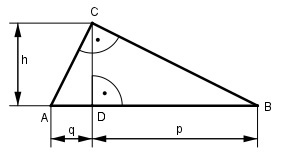

Pythagoras Aufgabe 64 Von einem rechtwinkligen Dreieck sind die Hypotenusenabschnitte q = 4 cm und p = 5 cm bekannt. Berechnen Sie die Länge der Katheten a und b in cm, und die Fläche A in cm2.

Höhensatz: h2 = q * p h2 = 4 cm * 5 cm = 20 cm2 |√ h = 4,5 cm Satz von Pythagoras im Dreieck DBC: BC2 = h2 + p2 BC2 = 4,52 cm2 + 52 cm2 = 45,25 cm2 |√ BC = a = 6,7 cm Satz von Pythagoras im Dreieck ADC: AC2 = h2 + q2 AC2 = 42 cm2 + 42 cm2 = 36,25 cm2 |√ AC = b = 6 cm AC * BC 6 cm * 6,7 cm A = ---------- = --------------- = 20,1 cm2 2 2